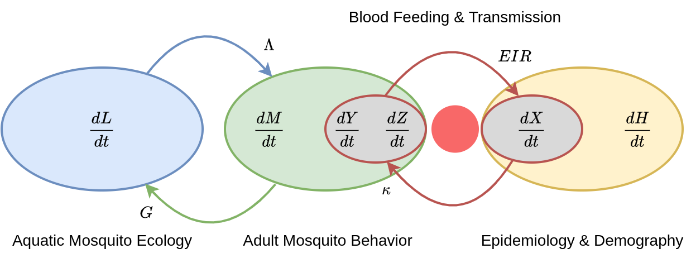
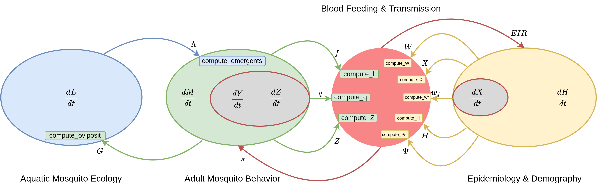

Micro-MoB (Microsimulation for mosquito-borne pathogens)
Source:vignettes/MicroMoB.Rmd
MicroMoB.RmdIntroduction
Micro-MoB is a software package which implements a framework for building mathematical models of mosquito-borne pathogen transmission (MBPT). The framework is flexible enough to incorporate vastly different models while at the same time places constraints upon how parts of the framework interact so that the software does not become obfuscatingly complex each time a new feature must be added.
We define terms used to talk about Micro-MoB below:
-
components: these are the irreducible “parts” of
MBPT models, and must be implemented in any model built in
Micro-MoB, even if only as a trivial model (e.g. as a
constant value or external forcing term). The components are adult
mosquitoes, immature (aquatic) mosquitoes, resident (modeled) humans,
non-resident visitors, and other blood hosts (e.g. livestock).
Components can themselves have arbitrarily complex internal structure,
but models in this framework insist each of these components be given a
definition (even if it is trivial, for example the constant
0). - interface: each component defines an interface, which other components and invariants (functions) can use to query information about it. The interface defines what a component is expected to compute and expose to the rest of the system.
- model: a specific instantiation of a component, which necessarily fulfills that component’s interface. The SIS (Susceptible-Infectious-Susceptible) model for human dynamics is a model for the human component, for example.
- composition pattern: the specific set of components and how they interact in Micro-MoB.
-
invariant component: any computation which is
generic across any specific set of models and which uses the generic
interface to query state and compute values. The bloodmeal algorithm is
an example, and the code is a contract with the modeller meaning any
model fulfilling the component interface it fills will be able to
interact with the rest of the framework, and the existing set of models.
It is described in
vignette("bloodmeal").
Software design
To accomplish this component-interface design in R, we use the S3 object system. Each component is a named element in the model object (an environment). The interface defines a set of generic functions which dispatch on the specific class of the object taking the place of that component.
Dynamics
A simplified schematic of the relationships between components (i.e. the model’s dynamics) in Micro-MoB is shown below.

The aquatic (immature) mosquito component \(L\) is in blue. Over a time step, it takes in eggs laid by ovipositing adult mosquitoes \(G\), and updates state, producing newly emerging adults \(\Lambda\). These emerging mosquitoes are added to the adult mosquito component (green). In the adult component, \(M\) represents the total mosquito density, \(Y\) and \(Z\) are infected and infectious mosquito populations, respectively. Uninfected mosquitoes become infected by biting infectious hosts, and during blood feeding are infected with probability \(\kappa\), computed by the bloodmeal (red). Infectious mosquitoes take bites on human hosts, resulting in a human per-capita rate of infection \(EIR\), computed by the bloodmeal, which changes prevalence of disease, \(X\). The overall human component (yellow) has dynamics acting on \(H\).
Components
For each component, the interface is defined in a file, for example,
R/humans_interface.R shows the user what methods must be
defined for any human model.
A specific implementation of a component is a model, and files that
replace _interface with the model name implement that model
(e.g. R/humans_SIS.R implements a SIS model).
We list the components which require interfaces below and specific models to implement them.
Mosquitoes
The mosquito component is responsible for all dynamics which update
adult mosquito populations. The interface is defined in
R/mosquito_interface.R, and the interface methods which are
required to be implemented can be found here.
Aquatic
The aquatic component is responsible for all dynamics which update
immature (aquatic stage) mosquito populations. The interface is defined
in R/aquatic_interface.R, and the interface methods with
are required to be implemented can be found here.
Humans
The human component updates human populations. The interface is
defined in R/humans_interface.R, and the interface methods
with are required to be implemented can be found here.
Visitor
The human component updates human populations outside of the resident
population of the geographic area being simulated. The interface is
defined in R/visitor_interface.R, and the interface methods
with are required to be implemented can be found here.
Other blood hosts
The other (alternative) blood host component is responsible for other
blood hosts for mosquitoes (livestock, dogs, etc). The interface is
defined in R/other_interface.R, and the interface methods
with are required to be implemented can be found here.
Dynamics between components
Now that we’ve seen the components and know where to find the
interfaces, we can present the dynamics again, but annotated with more
information telling us exactly what methods are used to pass information
between components. For example, we see a green arrow sending eggs,
\(G\), from the adult mosquitoes to the
aquatic mosquitoes component. Within the aquatic component (blue oval)
we see a green method, compute_oviposit, meaning that the
aquatic component’s state update method can use this interface method to
get the number of eggs laid each time step.
Please note we do not include the visitor or other blood host components in this diagram, as they are supplied as external forcing (or constants) to the bloodmeal and do not carry state.
